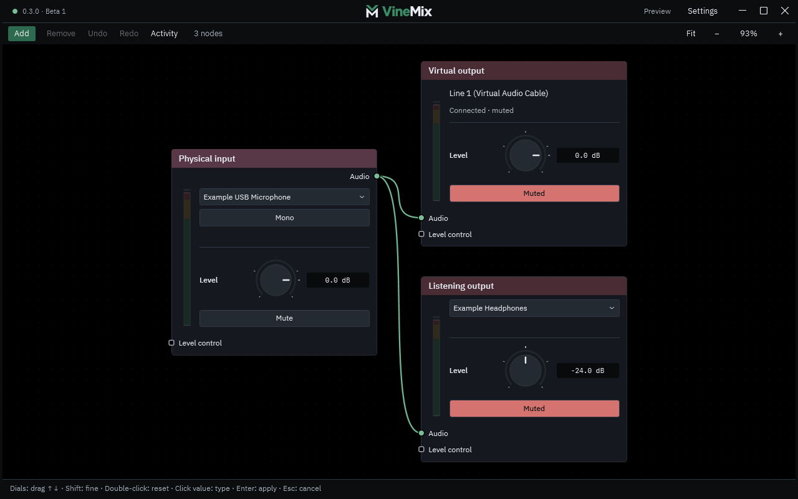

Mix your microphone, music and apps—and choose who hears what.
Illustrative routing: microphone, music and apps connect to VineMix, which sends a mix to headphones or a virtual microphone. This is a visual illustration, not live audio.
Windows 11 x64 · Experimental v0.2.0
Start with a sound. Follow the cable.
Add a source
Your microphone or a running app.
Shape the sound
Adjust levels, combine sources, or add EQ and noise reduction.
Choose an output
Send the result to your headphones or a virtual microphone.
Separate listening and outgoing paths have independent levels and mutes. Virtual microphone routing needs a separately installed audio driver.

For voice chat. And the soundtrack.
Shape your mic for a game with friends, keep your listening mix separate, or combine voice and music into one outgoing microphone mix.
VRChat’s unofficial DJ?
At least get the mix right.
Balance voice and music separately, or let music step back when you speak with Ducking.
Mic + music player Mix Virtual mic
An intended use case for Windows desktop and PCVR. The virtual audio driver is separate, and end-to-end VRChat compatibility is still being qualified.
A small project. A considered approach.
Built with care. Still experimental.
Audio processing runs locally on your PC. VineMix remembers your workspace, keeps automatic settings backups and shows when a device needs attention.
Automated checks cover synthetic audio processing and desktop controls. Real-device and long-session testing remain incomplete.
MIT licensed. Open source is the plan.
VineMix’s original application code is MIT licensed. Public source and downloads are not available yet.
Third-party components and virtual audio drivers keep their own terms.
Read the application licenseA few useful details.
Do I need an audio driver?
Physical microphones and running-app capture work without virtual audio drivers. Virtual routes use separately installed drivers: the documented input uses VB-CABLE, and the outgoing virtual microphone uses Virtual Audio Cable. Check the publisher’s terms for your use.
Will it mute my music player’s original sound?
No. App capture copies existing playback. You can keep the player’s normal headphone audio while sending its captured copy to the virtual microphone. Sending both copies to the same headphones can double the sound.
Does it run on a standalone VR headset?
VineMix currently targets Windows 11 x64. The VRChat use case is for Windows desktop and PCVR, rather than an application running natively on a standalone headset.
Can I download it yet?
There is no public release yet. This page introduces the project while release preparation and testing continue.